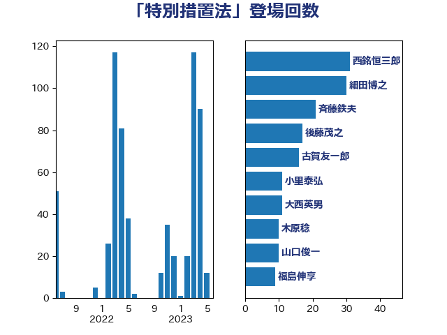

単語「特別措置法」

| 西銘恒三郎 | 自由民主党 | 31 回 |
| 細田博之 | 自由民主党 | 30 回 |
| 斉藤鉄夫 | 公明党 | 21 回 |
| 後藤茂之 | 自由民主党 | 17 回 |
| 古賀友一郎 | 自由民主党 | 16 回 |
| 小里泰弘 | 自由民主党 | 11 回 |
| 大西英男 | 自由民主党 | 11 回 |
| 木原稔 | 自由民主党 | 10 回 |
| 山口俊一 | 自由民主党 | 10 回 |
| 福島伸享 | 無所属 | 9 回 |
| 橋本岳 | 自由民主党 | 9 回 |
| 岸田文雄 | 自由民主党 | 9 回 |
| 三ッ林裕巳 | 自由民主党 | 9 回 |
| 緒方林太郎 | 無所属 | 8 回 |
| 鈴木俊一 | 自由民主党 | 6 回 |
| 野田国義 | 立憲民主党 | 6 回 |
| 谷公一 | 自由民主党 | 6 回 |
| 沢田良 | 日本維新の会 | 6 回 |
| 岡田直樹 | 自由民主党 | 6 回 |
| 西村康稔 | 自由民主党 | 5 回 |
| 渡辺博道 | 自由民主党 | 5 回 |
| 斎藤嘉隆 | 立憲民主党 | 5 回 |
| 山田宏 | 自由民主党 | 5 回 |
| 山東昭子 | 自由民主党 | 5 回 |
| 佐々木さやか | 公明党 | 5 回 |
| 伊藤忠彦 | 自由民主党 | 5 回 |
| 阿部知子 | 立憲民主党 | 4 回 |
| 阿部司 | 日本維新の会 | 4 回 |
| 長友慎治 | 国民民主党 | 4 回 |
| 菅家一郎 | 自由民主党 | 4 回 |
| 米山隆一 | 立憲民主党 | 4 回 |
| 水野素子 | 立憲民主党 | 4 回 |
| 末次精一 | 立憲民主党 | 4 回 |
| 小宮山泰子 | 立憲民主党 | 4 回 |
| 國場幸之助 | 自由民主党 | 4 回 |
| 加藤勝信 | 自由民主党 | 4 回 |
| 中根一幸 | 自由民主党 | 4 回 |
| 長島昭久 | 自由民主党 | 3 回 |
| 金城泰邦 | 公明党 | 3 回 |
| 近藤和也 | 立憲民主党 | 3 回 |
| 清水貴之 | 日本維新の会 | 3 回 |
| 永岡桂子 | 自由民主党 | 3 回 |
| 林芳正 | 自由民主党 | 3 回 |
| 岬麻紀 | 日本維新の会 | 3 回 |
| 山本太郎 | れいわ新選組 | 3 回 |
| 山口壯 | 自由民主党 | 3 回 |
| 尾辻秀久 | 無所属 | 3 回 |
| 太田房江 | 自由民主党 | 3 回 |
| 勝部賢志 | 立憲民主党 | 3 回 |
| 高橋英明 | 日本維新の会 | 2 回 |
| 青柳陽一郎 | 立憲民主党 | 2 回 |
| 鈴木宗男 | 日本維新の会 | 2 回 |
| 足立康史 | 日本維新の会 | 2 回 |
| 赤羽一嘉 | 公明党 | 2 回 |
| 西村明宏 | 自由民主党 | 2 回 |
| 福重隆浩 | 公明党 | 2 回 |
| 石井苗子 | 日本維新の会 | 2 回 |
| 田村貴昭 | 日本共産党 | 2 回 |
| 田村憲久 | 自由民主党 | 2 回 |
| 河野義博 | 公明党 | 2 回 |
| 櫻井周 | 立憲民主党 | 2 回 |
| 柴田巧 | 日本維新の会 | 2 回 |
| 枝野幸男 | 立憲民主党 | 2 回 |
| 松本剛明 | 自由民主党 | 2 回 |
| 本田太郎 | 自由民主党 | 2 回 |
| 山本佐知子 | 自由民主党 | 2 回 |
| 小熊慎司 | 立憲民主党 | 2 回 |
| 宮崎政久 | 自由民主党 | 2 回 |
| 城井崇 | 立憲民主党 | 2 回 |
| 吉田とも代 | 日本維新の会 | 2 回 |
| 伊波洋一 | 無所属 | 2 回 |
| 今井絵理子 | 自由民主党 | 2 回 |
| 中川貴元 | 自由民主党 | 2 回 |
| 三浦信祐 | 公明党 | 2 回 |
| 三反園訓 | 無所属 | 2 回 |
| おおつき紅葉 | 立憲民主党 | 2 回 |
| 高橋千鶴子 | 日本共産党 | 1 回 |
| 高木毅 | 自由民主党 | 1 回 |
| 馬場伸幸 | 日本維新の会 | 1 回 |
| 青山大人 | 立憲民主党 | 1 回 |
| 青山周平 | 自由民主党 | 1 回 |
| 阿部弘樹 | 日本維新の会 | 1 回 |
| 長坂康正 | 自由民主党 | 1 回 |
| 鈴木英敬 | 自由民主党 | 1 回 |
| 鈴木義弘 | 国民民主党 | 1 回 |
| 鈴木敦 | 国民民主党 | 1 回 |
| 金子恵美 | 立憲民主党 | 1 回 |
| 野田聖子 | 自由民主党 | 1 回 |
| 道下大樹 | 立憲民主党 | 1 回 |
| 赤木正幸 | 日本維新の会 | 1 回 |
| 谷田川元 | 立憲民主党 | 1 回 |
| 西野太亮 | 自由民主党 | 1 回 |
| 蓮舫 | 立憲民主党 | 1 回 |
| 萩生田光一 | 自由民主党 | 1 回 |
| 若松謙維 | 公明党 | 1 回 |
| 舩後靖彦 | れいわ新選組 | 1 回 |
| 舞立昇治 | 自由民主党 | 1 回 |
| 羽田次郎 | 立憲民主党 | 1 回 |
| 紙智子 | 日本共産党 | 1 回 |
| 竹谷とし子 | 公明党 | 1 回 |
| 竹詰仁 | 国民民主党 | 1 回 |
| 稲富修二 | 立憲民主党 | 1 回 |
| 秋葉賢也 | 自由民主党 | 1 回 |
| 神谷裕 | 立憲民主党 | 1 回 |
| 石橋通宏 | 立憲民主党 | 1 回 |
| 石垣のりこ | 立憲民主党 | 1 回 |
| 石原正敬 | 自由民主党 | 1 回 |
| 石井章 | 日本維新の会 | 1 回 |
| 石井準一 | 自由民主党 | 1 回 |
| 石井浩郎 | 自由民主党 | 1 回 |
| 石井正弘 | 自由民主党 | 1 回 |
| 石井啓一 | 公明党 | 1 回 |
| 田野瀬太道 | 無所属 | 1 回 |
| 田村まみ | 国民民主党 | 1 回 |
| 田中健 | 国民民主党 | 1 回 |
| 牧野たかお | 自由民主党 | 1 回 |
| 片山大介 | 日本維新の会 | 1 回 |
| 熊谷裕人 | 立憲民主党 | 1 回 |
| 清水真人 | 自由民主党 | 1 回 |
| 河西宏一 | 公明党 | 1 回 |
| 永井学 | 自由民主党 | 1 回 |
| 比嘉奈津美 | 自由民主党 | 1 回 |
| 横山信一 | 公明党 | 1 回 |
| 森山浩行 | 立憲民主党 | 1 回 |
| 森屋宏 | 自由民主党 | 1 回 |
| 梅村聡 | 日本維新の会 | 1 回 |
| 根本幸典 | 自由民主党 | 1 回 |
| 柳本顕 | 自由民主党 | 1 回 |
| 柳ヶ瀬裕文 | 日本維新の会 | 1 回 |
| 柚木道義 | 立憲民主党 | 1 回 |
| 松野博一 | 自由民主党 | 1 回 |
| 杉尾秀哉 | 立憲民主党 | 1 回 |
| 本田顕子 | 自由民主党 | 1 回 |
| 末松信介 | 自由民主党 | 1 回 |
| 木原誠二 | 自由民主党 | 1 回 |
| 早稲田ゆき | 立憲民主党 | 1 回 |
| 早坂敦 | 日本維新の会 | 1 回 |
| 新妻秀規 | 公明党 | 1 回 |
| 新垣邦男 | 立憲民主党 | 1 回 |
| 庄子賢一 | 公明党 | 1 回 |
| 川田龍平 | 立憲民主党 | 1 回 |
| 島村大 | 自由民主党 | 1 回 |
| 岸真紀子 | 立憲民主党 | 1 回 |
| 岩渕友 | 日本共産党 | 1 回 |
| 山本剛正 | 日本維新の会 | 1 回 |
| 山崎正恭 | 公明党 | 1 回 |
| 尾崎正直 | 自由民主党 | 1 回 |
| 小沼巧 | 立憲民主党 | 1 回 |
| 小林茂樹 | 自由民主党 | 1 回 |
| 寺田稔 | 自由民主党 | 1 回 |
| 室井邦彦 | 日本維新の会 | 1 回 |
| 宗清皇一 | 自由民主党 | 1 回 |
| 太栄志 | 立憲民主党 | 1 回 |
| 大島敦 | 立憲民主党 | 1 回 |
| 大島九州男 | れいわ新選組 | 1 回 |
| 塩田博昭 | 公明党 | 1 回 |
| 堀場幸子 | 日本維新の会 | 1 回 |
| 堀内詔子 | 自由民主党 | 1 回 |
| 土田慎 | 自由民主党 | 1 回 |
| 和田政宗 | 自由民主党 | 1 回 |
| 吉川沙織 | 立憲民主党 | 1 回 |
| 古川康 | 自由民主党 | 1 回 |
| 友納理緒 | 自由民主党 | 1 回 |
| 務台俊介 | 自由民主党 | 1 回 |
| 前川清成 | 日本維新の会 | 1 回 |
| 倉林明子 | 日本共産党 | 1 回 |
| 伊東信久 | 日本維新の会 | 1 回 |
| 中野洋昌 | 公明党 | 1 回 |
| 中谷一馬 | 立憲民主党 | 1 回 |
| 中川正春 | 立憲民主党 | 1 回 |
| 中川宏昌 | 公明党 | 1 回 |
| 中島克仁 | 立憲民主党 | 1 回 |
| 下野六太 | 公明党 | 1 回 |
| 上田清司 | 国民民主党 | 1 回 |